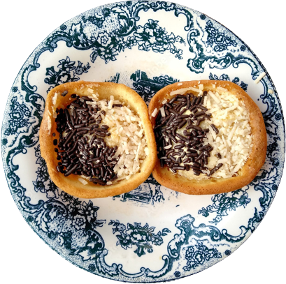
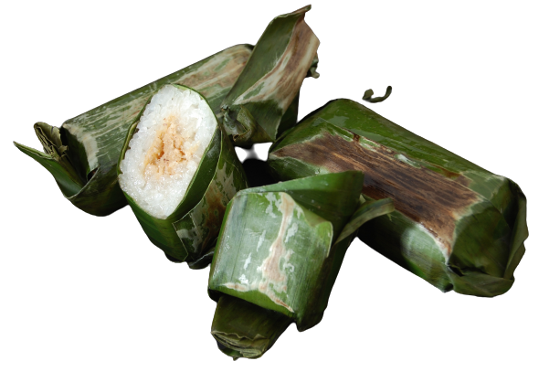
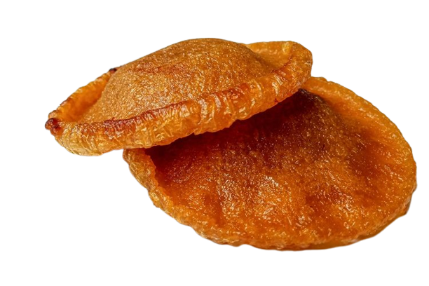
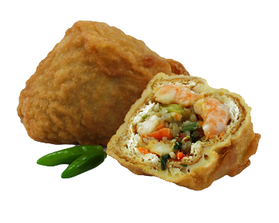

Tempat Warisan Kuliner Menjadi Hidup dengan cita rasa autentik, kelezatan yang memikat

Cita Rasa Nusantara
Makanan ringan khas Nusantara menggugah selera dengan kelezatan dan keanekaragaman rasanya. Dari rempah-rempah yang kaya hingga tekstur yang renyah, makanan ringan Nusantara menghadirkan cita rasa unik yang tak terlupakan.
Jajanan Khas Nusantara
Lemper

Terbuat dari ketan yang dikukus dan dilapisi dengan irisan daging ayam atau abon. Dengan tekstur kenyal dan rasa gurih yang meresap dalam setiap gigitan, lemper menjadi pilihan makanan ringan yang lezat dan praktis.
Kue Cucur

Terbuat dari adonan tepung beras yang dicampur dengan gula kelapa dan air kelapa segar, kue cucur memiliki tekstur yang lembut di bagian dalamnya.
Tahu Isi

Terbuat dari tahu yang digoreng hingga kecokelatan, tahu isi kemudian diisi dengan campuran sayuran, daging cincang, atau udang yang telah dibumbui dengan rempah-rempah.
Jajan pasar Indonesia, gigitan kelezatan warisan budaya